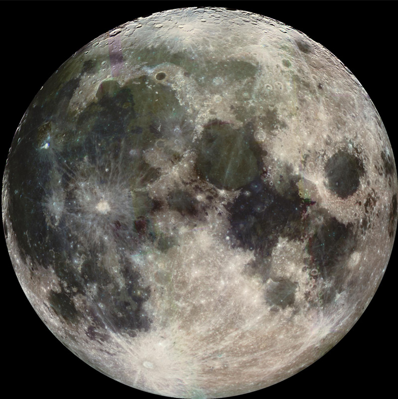

Earth's Moon from Galileo

This is a NASA image taken from the
Galileo
spacecraft.
Galileo spacecraft
Apollo landing sites on Moon
Images from Galileo:
Moon
Index
Solar System Illustration
Solar System Concepts
HyperPhysics
**********
Astrophysics
R Nave
Go Back